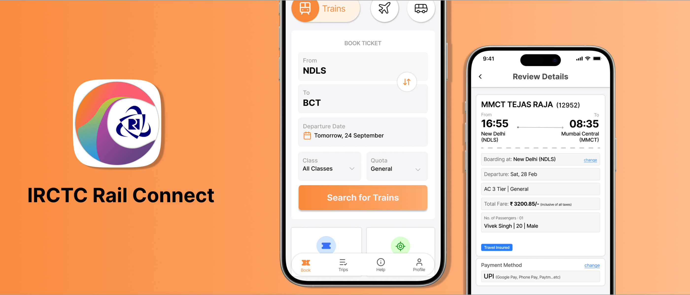
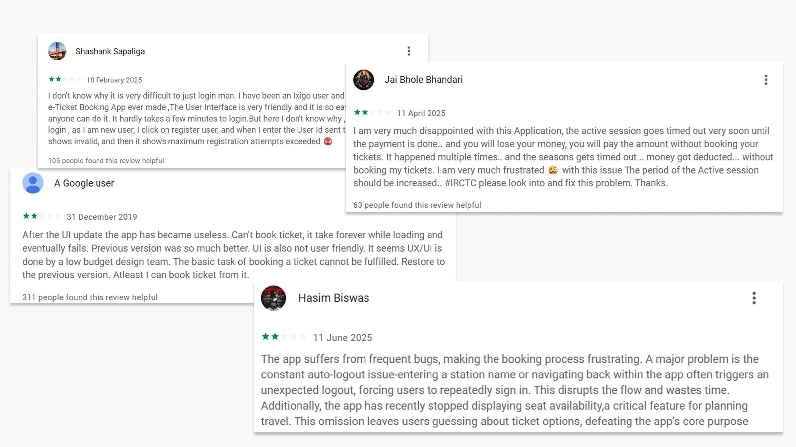
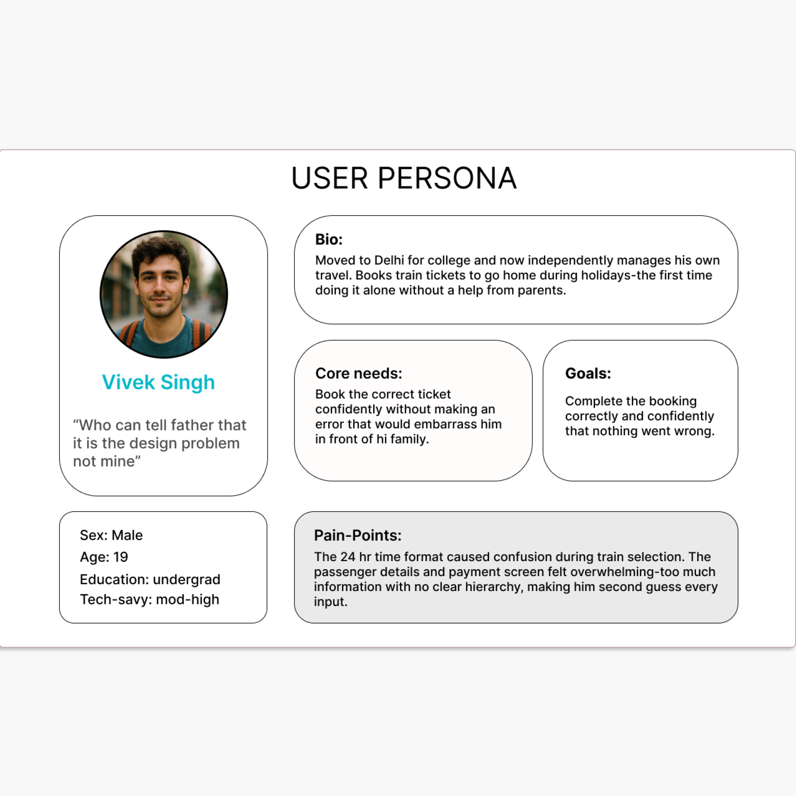
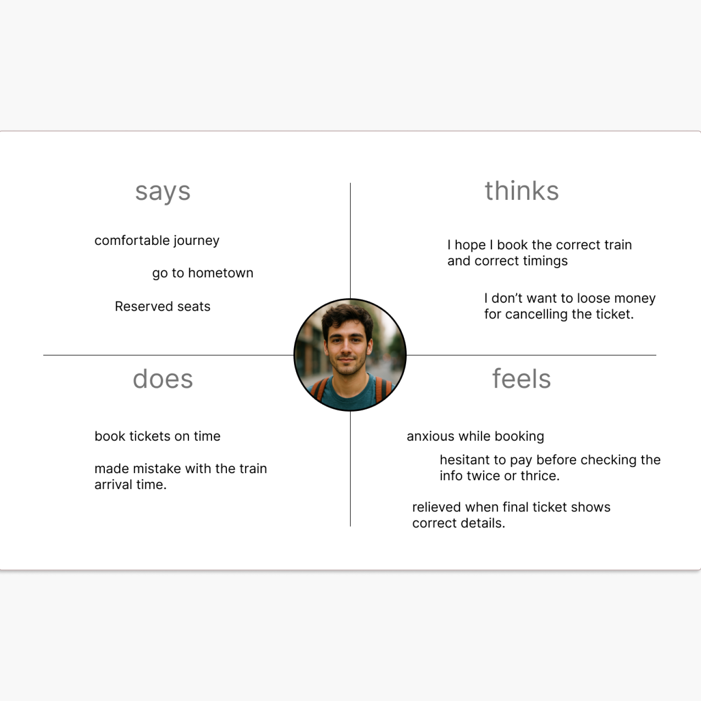
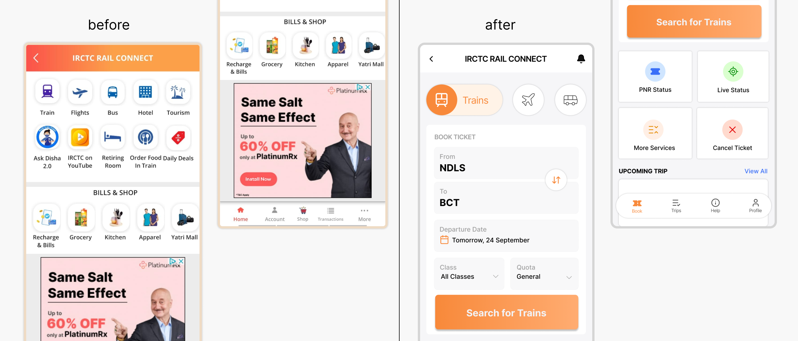
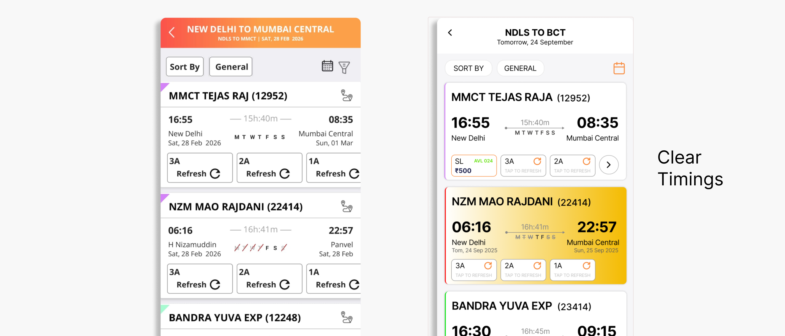
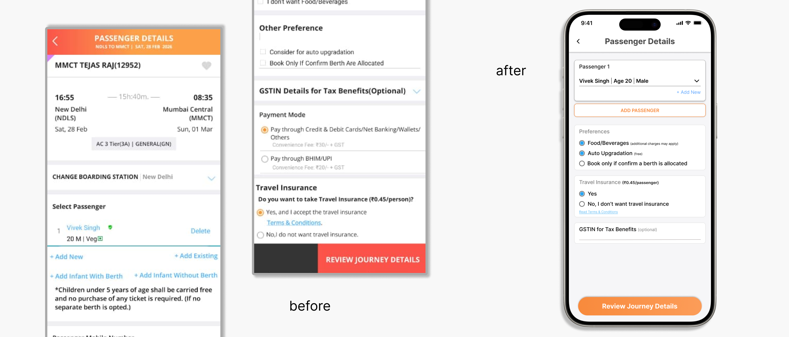
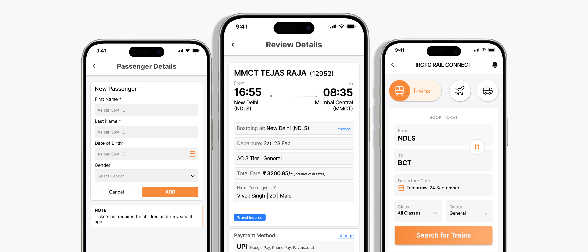
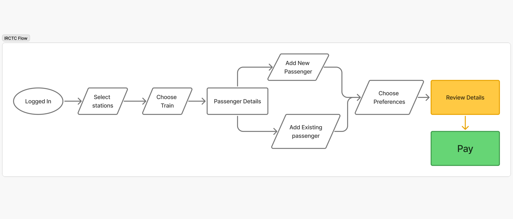

A UX redesign of India's official train booking app - improving information architecture, booking flow clarity, and reducing payment hesitation.

Context
IRCTC is India's official train booking platform, used by millions - from daily commuters to occasional travelers, largely from middle and lower-middle class backgrounds. While third party apps like Ixigo and Paytm offer alternatives, users consistently return to IRCTC for its trusted pricing and direct booking authority.
They use it not because the experience is good, but because the alternative costs more or feels less reliable.
Problem
The app treats every element as equally important. Too many options compete for attention on the home screen, form inputs feel demanding and alert-inducing, and by the time users reach payment they are already mentally exhausted.
Drop-offs may be low - users complete the booking - but hesitation is high and confidence is low.
"Users complete the booking but only feel satisfied when they see the correct ticket - the relief reveals how much anxiety came before it."
Research
Due to project constraints, I conducted secondary research through analysis of 70+ user reviews across Reddit, Quora, and Google Play Store, and user comments on YouTube tutorial videos demonstrating the ticket booking flow.

Too many equally weighted options compete for attention, forcing users to scan everything before starting their primary task of booking a ticket.
Passenger detail screens present 8+ fields simultaneously with no clear hierarchy, making users feel alert and hesitant to proceed.
Users reach the payment screen mentally exhausted. Drop-offs are low but confidence is also low - users check details two or three times before paying, revealing underlying anxiety about errors.
In a country where 12hr AM/PM is the daily standard, the mandatory 24hr format creates mental conversion effort, especially during time-sensitive Tatkal bookings. A technical bug further forces users to change their entire phone settings for the app to function.
User


Design

Multiple unrelated services (travel, shopping, bills) are mixed on the home screen.
No clear primary booking entry point - users must scan too much before starting.
Navigation is not task-based, causing confusion and trial-and-error.
Booking is prioritized with a clear form and primary CTA visible above the fold.
Bottom navigation reorganized into task-based sections: Book, Trips, Help, Profile.
Secondary actions (PNR, Live Status, Cancel Ticket) are separated from the booking flow.
Design

Train options are difficult to compare due to cluttered cards and weak visual hierarchy. Key decision-making information competes with repeated elements and unnecessary UI noise.
Train options structured into cleaner cards with stronger hierarchy. Departure, arrival, duration and route are easier to scan. Availability and class selection simplified using compact chips.
Problem Framing


User Flow
The redesigned flow covers the most critical screens in the journey - Home, Search, Results, Passenger Details, Review, and Payment.

Conclusion
Closing
This case study focuses on improving the IRCTC booking experience through clearer information architecture, a more structured booking flow, and improved screen hierarchy across key steps. The biggest learning was that high-stakes flows like ticket booking require strong hierarchy and predictable navigation - better structure and UX writing can improve trust even without backend changes. Reducing clutter is often the fastest path to improving usability.
← Back to all projects